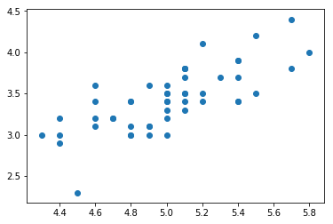
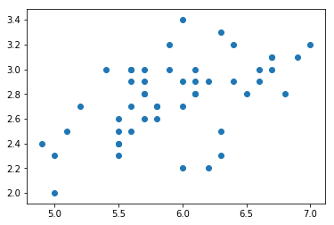
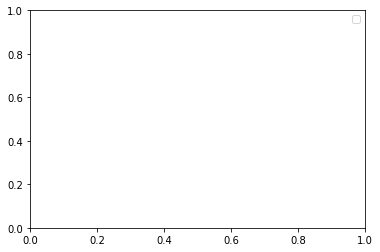
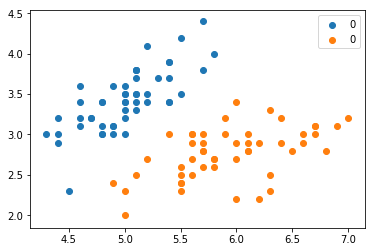

Type 'copyright', 'credits' or 'license' for more information
IPython 7.4.0 -- An enhanced Interactive Python. Type '?' for help.
In [1]: import pandas as pd
In [2]: import numpy as np
In [3]: from sklearn.datasets import load-i
File "<ipython-input-3-8277112126cd>", line 1
from sklearn.datasets import load-i
^
SyntaxError: invalid syntax
In [3]:
In [4]: from sklearn.datasets import load_iris
In [5]: import matpotlib.pyplot as plt
---------------------------------------------------------------------------
ModuleNotFoundError Traceback (most recent call last)
<ipython-input-5-67e57e91cca0> in <module>
----> 1 import matpotlib.pyplot as plt
ModuleNotFoundError: No module named 'matpotlib'
In [6]: import matplotlib.pyplot as plt
In [7]: iris = load_iris()
In [8]: iris
Out[8]:
{'data': array([[5.1, 3.5, 1.4, 0.2],
[4.9, 3. , 1.4, 0.2],
[4.7, 3.2, 1.3, 0.2],
[4.6, 3.1, 1.5, 0.2],
[5. , 3.6, 1.4, 0.2],
[5.4, 3.9, 1.7, 0.4],
[4.6, 3.4, 1.4, 0.3],
[5. , 3.4, 1.5, 0.2],
[4.4, 2.9, 1.4, 0.2],
[4.9, 3.1, 1.5, 0.1],
[5.4, 3.7, 1.5, 0.2],
[4.8, 3.4, 1.6, 0.2],
[4.8, 3. , 1.4, 0.1],
[4.3, 3. , 1.1, 0.1],
[5.8, 4. , 1.2, 0.2],
[5.7, 4.4, 1.5, 0.4],
[5.4, 3.9, 1.3, 0.4],
[5.1, 3.5, 1.4, 0.3],
[5.7, 3.8, 1.7, 0.3],
[5.1, 3.8, 1.5, 0.3],
[5.4, 3.4, 1.7, 0.2],
[5.1, 3.7, 1.5, 0.4],
[4.6, 3.6, 1. , 0.2],
[5.1, 3.3, 1.7, 0.5],
[4.8, 3.4, 1.9, 0.2],
[5. , 3. , 1.6, 0.2],
[5. , 3.4, 1.6, 0.4],
[5.2, 3.5, 1.5, 0.2],
[5.2, 3.4, 1.4, 0.2],
[4.7, 3.2, 1.6, 0.2],
[4.8, 3.1, 1.6, 0.2],
[5.4, 3.4, 1.5, 0.4],
[5.2, 4.1, 1.5, 0.1],
[5.5, 4.2, 1.4, 0.2],
[4.9, 3.1, 1.5, 0.2],
[5. , 3.2, 1.2, 0.2],
[5.5, 3.5, 1.3, 0.2],
[4.9, 3.6, 1.4, 0.1],
[4.4, 3. , 1.3, 0.2],
[5.1, 3.4, 1.5, 0.2],
[5. , 3.5, 1.3, 0.3],
[4.5, 2.3, 1.3, 0.3],
[4.4, 3.2, 1.3, 0.2],
[5. , 3.5, 1.6, 0.6],
[5.1, 3.8, 1.9, 0.4],
[4.8, 3. , 1.4, 0.3],
[5.1, 3.8, 1.6, 0.2],
[4.6, 3.2, 1.4, 0.2],
[5.3, 3.7, 1.5, 0.2],
[5. , 3.3, 1.4, 0.2],
[7. , 3.2, 4.7, 1.4],
[6.4, 3.2, 4.5, 1.5],
[6.9, 3.1, 4.9, 1.5],
[5.5, 2.3, 4. , 1.3],
[6.5, 2.8, 4.6, 1.5],
[5.7, 2.8, 4.5, 1.3],
[6.3, 3.3, 4.7, 1.6],
[4.9, 2.4, 3.3, 1. ],
[6.6, 2.9, 4.6, 1.3],
[5.2, 2.7, 3.9, 1.4],
[5. , 2. , 3.5, 1. ],
[5.9, 3. , 4.2, 1.5],
[6. , 2.2, 4. , 1. ],
[6.1, 2.9, 4.7, 1.4],
[5.6, 2.9, 3.6, 1.3],
[6.7, 3.1, 4.4, 1.4],
[5.6, 3. , 4.5, 1.5],
[5.8, 2.7, 4.1, 1. ],
[6.2, 2.2, 4.5, 1.5],
[5.6, 2.5, 3.9, 1.1],
[5.9, 3.2, 4.8, 1.8],
[6.1, 2.8, 4. , 1.3],
[6.3, 2.5, 4.9, 1.5],
[6.1, 2.8, 4.7, 1.2],
[6.4, 2.9, 4.3, 1.3],
[6.6, 3. , 4.4, 1.4],
[6.8, 2.8, 4.8, 1.4],
[6.7, 3. , 5. , 1.7],
[6. , 2.9, 4.5, 1.5],
[5.7, 2.6, 3.5, 1. ],
[5.5, 2.4, 3.8, 1.1],
[5.5, 2.4, 3.7, 1. ],
[5.8, 2.7, 3.9, 1.2],
[6. , 2.7, 5.1, 1.6],
[5.4, 3. , 4.5, 1.5],
[6. , 3.4, 4.5, 1.6],
[6.7, 3.1, 4.7, 1.5],
[6.3, 2.3, 4.4, 1.3],
[5.6, 3. , 4.1, 1.3],
[5.5, 2.5, 4. , 1.3],
[5.5, 2.6, 4.4, 1.2],
[6.1, 3. , 4.6, 1.4],
[5.8, 2.6, 4. , 1.2],
[5. , 2.3, 3.3, 1. ],
[5.6, 2.7, 4.2, 1.3],
[5.7, 3. , 4.2, 1.2],
[5.7, 2.9, 4.2, 1.3],
[6.2, 2.9, 4.3, 1.3],
[5.1, 2.5, 3. , 1.1],
[5.7, 2.8, 4.1, 1.3],
[6.3, 3.3, 6. , 2.5],
[5.8, 2.7, 5.1, 1.9],
[7.1, 3. , 5.9, 2.1],
[6.3, 2.9, 5.6, 1.8],
[6.5, 3. , 5.8, 2.2],
[7.6, 3. , 6.6, 2.1],
[4.9, 2.5, 4.5, 1.7],
[7.3, 2.9, 6.3, 1.8],
[6.7, 2.5, 5.8, 1.8],
[7.2, 3.6, 6.1, 2.5],
[6.5, 3.2, 5.1, 2. ],
[6.4, 2.7, 5.3, 1.9],
[6.8, 3. , 5.5, 2.1],
[5.7, 2.5, 5. , 2. ],
[5.8, 2.8, 5.1, 2.4],
[6.4, 3.2, 5.3, 2.3],
[6.5, 3. , 5.5, 1.8],
[7.7, 3.8, 6.7, 2.2],
[7.7, 2.6, 6.9, 2.3],
[6. , 2.2, 5. , 1.5],
[6.9, 3.2, 5.7, 2.3],
[5.6, 2.8, 4.9, 2. ],
[7.7, 2.8, 6.7, 2. ],
[6.3, 2.7, 4.9, 1.8],
[6.7, 3.3, 5.7, 2.1],
[7.2, 3.2, 6. , 1.8],
[6.2, 2.8, 4.8, 1.8],
[6.1, 3. , 4.9, 1.8],
[6.4, 2.8, 5.6, 2.1],
[7.2, 3. , 5.8, 1.6],
[7.4, 2.8, 6.1, 1.9],
[7.9, 3.8, 6.4, 2. ],
[6.4, 2.8, 5.6, 2.2],
[6.3, 2.8, 5.1, 1.5],
[6.1, 2.6, 5.6, 1.4],
[7.7, 3. , 6.1, 2.3],
[6.3, 3.4, 5.6, 2.4],
[6.4, 3.1, 5.5, 1.8],
[6. , 3. , 4.8, 1.8],
[6.9, 3.1, 5.4, 2.1],
[6.7, 3.1, 5.6, 2.4],
[6.9, 3.1, 5.1, 2.3],
[5.8, 2.7, 5.1, 1.9],
[6.8, 3.2, 5.9, 2.3],
[6.7, 3.3, 5.7, 2.5],
[6.7, 3. , 5.2, 2.3],
[6.3, 2.5, 5. , 1.9],
[6.5, 3. , 5.2, 2. ],
[6.2, 3.4, 5.4, 2.3],
[5.9, 3. , 5.1, 1.8]]),
'target': array([0, 0, 0, 0, 0, 0, 0, 0, 0, 0, 0, 0, 0, 0, 0, 0, 0, 0, 0, 0, 0, 0,
0, 0, 0, 0, 0, 0, 0, 0, 0, 0, 0, 0, 0, 0, 0, 0, 0, 0, 0, 0, 0, 0,
0, 0, 0, 0, 0, 0, 1, 1, 1, 1, 1, 1, 1, 1, 1, 1, 1, 1, 1, 1, 1, 1,
1, 1, 1, 1, 1, 1, 1, 1, 1, 1, 1, 1, 1, 1, 1, 1, 1, 1, 1, 1, 1, 1,
1, 1, 1, 1, 1, 1, 1, 1, 1, 1, 1, 1, 2, 2, 2, 2, 2, 2, 2, 2, 2, 2,
2, 2, 2, 2, 2, 2, 2, 2, 2, 2, 2, 2, 2, 2, 2, 2, 2, 2, 2, 2, 2, 2,
2, 2, 2, 2, 2, 2, 2, 2, 2, 2, 2, 2, 2, 2, 2, 2, 2, 2]),
'target_names': array(['setosa', 'versicolor', 'virginica'], dtype='<U10'),
'DESCR': '.. _iris_dataset:\n\nIris plants dataset\n--------------------\n\n**Data Set Characteristics:**\n\n :Number of Instances: 150 (50 in each of three classes)\n :Number of Attributes: 4 numeric, predictive attributes and the class\n :Attribute Information:\n - sepal length in cm\n - sepal width in cm\n - petal length in cm\n - petal width in cm\n - class:\n - Iris-Setosa\n - Iris-Versicolour\n - Iris-Virginica\n \n :Summary Statistics:\n\n ============== ==== ==== ======= ===== ====================\n Min Max Mean SD Class Correlation\n ============== ==== ==== ======= ===== ====================\n sepal length: 4.3 7.9 5.84 0.83 0.7826\n sepal width: 2.0 4.4 3.05 0.43 -0.4194\n petal length: 1.0 6.9 3.76 1.76 0.9490 (high!)\n petal width: 0.1 2.5 1.20 0.76 0.9565 (high!)\n ============== ==== ==== ======= ===== ====================\n\n :Missing Attribute Values: None\n :Class Distribution: 33.3% for each of 3 classes.\n :Creator: R.A. Fisher\n :Donor: Michael Marshall (MARSHALL%PLU@io.arc.nasa.gov)\n :Date: July, 1988\n\nThe famous Iris database, first used by Sir R.A. Fisher. The dataset is taken\nfrom Fisher\'s paper. Note that it\'s the same as in R, but not as in the UCI\nMachine Learning Repository, which has two wrong data points.\n\nThis is perhaps the best known database to be found in the\npattern recognition literature. Fisher\'s paper is a classic in the field and\nis referenced frequently to this day. (See Duda & Hart, for example.) The\ndata set contains 3 classes of 50 instances each, where each class refers to a\ntype of iris plant. One class is linearly separable from the other 2; the\nlatter are NOT linearly separable from each other.\n\n.. topic:: References\n\n - Fisher, R.A. "The use of multiple measurements in taxonomic problems"\n Annual Eugenics, 7, Part II, 179-188 (1936); also in "Contributions to\n Mathematical Statistics" (John Wiley, NY, 1950).\n - Duda, R.O., & Hart, P.E. (1973) Pattern Classification and Scene Analysis.\n (Q327.D83) John Wiley & Sons. ISBN 0-471-22361-1. See page 218.\n - Dasarathy, B.V. (1980) "Nosing Around the Neighborhood: A New System\n Structure and Classification Rule for Recognition in Partially Exposed\n Environments". IEEE Transactions on Pattern Analysis and Machine\n Intelligence, Vol. PAMI-2, No. 1, 67-71.\n - Gates, G.W. (1972) "The Reduced Nearest Neighbor Rule". IEEE Transactions\n on Information Theory, May 1972, 431-433.\n - See also: 1988 MLC Proceedings, 54-64. Cheeseman et al"s AUTOCLASS II\n conceptual clustering system finds 3 classes in the data.\n - Many, many more ...',
'feature_names': ['sepal length (cm)',
'sepal width (cm)',
'petal length (cm)',
'petal width (cm)'],
'filename': 'D:\\program\\Anaconda\\lib\\site-packages\\sklearn\\datasets\\data\\iris.csv'}
In [9]: df = pd.DataFrame(iris.data,columns = iris.feature_names)
In [10]: df['label'] = iris.target
In [11]: df
Out[11]:
sepal length (cm) sepal width (cm) petal length (cm) petal width (cm) \
0 5.1 3.5 1.4 0.2
1 4.9 3.0 1.4 0.2
2 4.7 3.2 1.3 0.2
3 4.6 3.1 1.5 0.2
4 5.0 3.6 1.4 0.2
5 5.4 3.9 1.7 0.4
6 4.6 3.4 1.4 0.3
7 5.0 3.4 1.5 0.2
8 4.4 2.9 1.4 0.2
9 4.9 3.1 1.5 0.1
10 5.4 3.7 1.5 0.2
11 4.8 3.4 1.6 0.2
12 4.8 3.0 1.4 0.1
13 4.3 3.0 1.1 0.1
14 5.8 4.0 1.2 0.2
15 5.7 4.4 1.5 0.4
16 5.4 3.9 1.3 0.4
17 5.1 3.5 1.4 0.3
18 5.7 3.8 1.7 0.3
19 5.1 3.8 1.5 0.3
20 5.4 3.4 1.7 0.2
21 5.1 3.7 1.5 0.4
22 4.6 3.6 1.0 0.2
23 5.1 3.3 1.7 0.5
24 4.8 3.4 1.9 0.2
25 5.0 3.0 1.6 0.2
26 5.0 3.4 1.6 0.4
27 5.2 3.5 1.5 0.2
28 5.2 3.4 1.4 0.2
29 4.7 3.2 1.6 0.2
.. ... ... ... ...
120 6.9 3.2 5.7 2.3
121 5.6 2.8 4.9 2.0
122 7.7 2.8 6.7 2.0
123 6.3 2.7 4.9 1.8
124 6.7 3.3 5.7 2.1
125 7.2 3.2 6.0 1.8
126 6.2 2.8 4.8 1.8
127 6.1 3.0 4.9 1.8
128 6.4 2.8 5.6 2.1
129 7.2 3.0 5.8 1.6
130 7.4 2.8 6.1 1.9
131 7.9 3.8 6.4 2.0
132 6.4 2.8 5.6 2.2
133 6.3 2.8 5.1 1.5
134 6.1 2.6 5.6 1.4
135 7.7 3.0 6.1 2.3
136 6.3 3.4 5.6 2.4
137 6.4 3.1 5.5 1.8
138 6.0 3.0 4.8 1.8
139 6.9 3.1 5.4 2.1
140 6.7 3.1 5.6 2.4
141 6.9 3.1 5.1 2.3
142 5.8 2.7 5.1 1.9
143 6.8 3.2 5.9 2.3
144 6.7 3.3 5.7 2.5
145 6.7 3.0 5.2 2.3
146 6.3 2.5 5.0 1.9
147 6.5 3.0 5.2 2.0
148 6.2 3.4 5.4 2.3
149 5.9 3.0 5.1 1.8
label
0 0
1 0
2 0
3 0
4 0
5 0
6 0
7 0
8 0
9 0
10 0
11 0
12 0
13 0
14 0
15 0
16 0
17 0
18 0
19 0
20 0
21 0
22 0
23 0
24 0
25 0
26 0
27 0
28 0
29 0
.. ...
120 2
121 2
122 2
123 2
124 2
125 2
126 2
127 2
128 2
129 2
130 2
131 2
132 2
133 2
134 2
135 2
136 2
137 2
138 2
139 2
140 2
141 2
142 2
143 2
144 2
145 2
146 2
147 2
148 2
149 2
[150 rows x 5 columns]
In [12]: df.head()
Out[12]:
sepal length (cm) sepal width (cm) petal length (cm) petal width (cm) \
0 5.1 3.5 1.4 0.2
1 4.9 3.0 1.4 0.2
2 4.7 3.2 1.3 0.2
3 4.6 3.1 1.5 0.2
4 5.0 3.6 1.4 0.2
label
0 0
1 0
2 0
3 0
4 0
In [13]: df.head()
Out[13]:
sepal length (cm) sepal width (cm) petal length (cm) petal width (cm) \
0 5.1 3.5 1.4 0.2
1 4.9 3.0 1.4 0.2
2 4.7 3.2 1.3 0.2
3 4.6 3.1 1.5 0.2
4 5.0 3.6 1.4 0.2
label
0 0
1 0
2 0
3 0
4 0
In [14]: df.columns = [
...: 'sepal length', 'sepal width', 'petal length', 'petal width', 'label'
...: ]
In [15]: df.head()
Out[15]:
sepal length sepal width petal length petal width label
0 5.1 3.5 1.4 0.2 0
1 4.9 3.0 1.4 0.2 0
2 4.7 3.2 1.3 0.2 0
3 4.6 3.1 1.5 0.2 0
4 5.0 3.6 1.4 0.2 0
In [16]: df.label.value_counts()
Out[16]:
2 50
1 50
0 50
Name: label, dtype: int64
In [17]: df.sortby(label)
---------------------------------------------------------------------------
AttributeError Traceback (most recent call last)
<ipython-input-17-97f4fac049f1> in <module>
----> 1 df.sortby(label)
D:\program\Anaconda\lib\site-packages\pandas\core\generic.py in __getattr__(self, name)
5065 if self._info_axis._can_hold_identifiers_and_holds_name(name):
5066 return self[name]
-> 5067 return object.__getattribute__(self, name)
5068
5069 def __setattr__(self, name, value):
AttributeError: 'DataFrame' object has no attribute 'sortby'
In [18]: df.sort_values(by = 'label',axis = 0,ascending = False)
Out[18]:
sepal length sepal width petal length petal width label
149 5.9 3.0 5.1 1.8 2
111 6.4 2.7 5.3 1.9 2
122 7.7 2.8 6.7 2.0 2
121 5.6 2.8 4.9 2.0 2
120 6.9 3.2 5.7 2.3 2
119 6.0 2.2 5.0 1.5 2
118 7.7 2.6 6.9 2.3 2
117 7.7 3.8 6.7 2.2 2
116 6.5 3.0 5.5 1.8 2
115 6.4 3.2 5.3 2.3 2
114 5.8 2.8 5.1 2.4 2
112 6.8 3.0 5.5 2.1 2
110 6.5 3.2 5.1 2.0 2
124 6.7 3.3 5.7 2.1 2
109 7.2 3.6 6.1 2.5 2
108 6.7 2.5 5.8 1.8 2
107 7.3 2.9 6.3 1.8 2
106 4.9 2.5 4.5 1.7 2
105 7.6 3.0 6.6 2.1 2
104 6.5 3.0 5.8 2.2 2
103 6.3 2.9 5.6 1.8 2
102 7.1 3.0 5.9 2.1 2
101 5.8 2.7 5.1 1.9 2
100 6.3 3.3 6.0 2.5 2
123 6.3 2.7 4.9 1.8 2
113 5.7 2.5 5.0 2.0 2
125 7.2 3.2 6.0 1.8 2
137 6.4 3.1 5.5 1.8 2
126 6.2 2.8 4.8 1.8 2
147 6.5 3.0 5.2 2.0 2
.. ... ... ... ... ...
4 5.0 3.6 1.4 0.2 0
3 4.6 3.1 1.5 0.2 0
2 4.7 3.2 1.3 0.2 0
25 5.0 3.0 1.6 0.2 0
24 4.8 3.4 1.9 0.2 0
38 4.4 3.0 1.3 0.2 0
26 5.0 3.4 1.6 0.4 0
27 5.2 3.5 1.5 0.2 0
49 5.0 3.3 1.4 0.2 0
48 5.3 3.7 1.5 0.2 0
47 4.6 3.2 1.4 0.2 0
46 5.1 3.8 1.6 0.2 0
45 4.8 3.0 1.4 0.3 0
44 5.1 3.8 1.9 0.4 0
43 5.0 3.5 1.6 0.6 0
42 4.4 3.2 1.3 0.2 0
41 4.5 2.3 1.3 0.3 0
40 5.0 3.5 1.3 0.3 0
39 5.1 3.4 1.5 0.2 0
37 4.9 3.6 1.4 0.1 0
36 5.5 3.5 1.3 0.2 0
35 5.0 3.2 1.2 0.2 0
34 4.9 3.1 1.5 0.2 0
33 5.5 4.2 1.4 0.2 0
32 5.2 4.1 1.5 0.1 0
31 5.4 3.4 1.5 0.4 0
30 4.8 3.1 1.6 0.2 0
29 4.7 3.2 1.6 0.2 0
28 5.2 3.4 1.4 0.2 0
0 5.1 3.5 1.4 0.2 0
[150 rows x 5 columns]
In [19]: df.sort_values(by = 'label',axis = 0,ascending = False)[:5]
Out[19]:
sepal length sepal width petal length petal width label
149 5.9 3.0 5.1 1.8 2
111 6.4 2.7 5.3 1.9 2
122 7.7 2.8 6.7 2.0 2
121 5.6 2.8 4.9 2.0 2
120 6.9 3.2 5.7 2.3 2
In [20]: plt.scatter(df[:50]['sepal length'], df[:50]['sepal width'],label = '0')
Out[20]: <matplotlib.collections.PathCollection at 0x1c87123a668>

In [21]: plt.scatter(df[50:100]['sepal length'], df[50:100]['sepal width'],label = '0')
Out[21]: <matplotlib.collections.PathCollection at 0x1c8712cada0>

In [22]: plt.legend()
No handles with labels found to put in legend.
Out[22]: <matplotlib.legend.Legend at 0x1c87123aa58>

In [23]: plt.scatter(df[:50]['sepal length'], df[:50]['sepal width'],label = '0')
...: plt.scatter(df[50:100]['sepal length'], df[50:100]['sepal width'],label = '0')
...: plt.legend()
Out[23]: <matplotlib.legend.Legend at 0x1c871362908>

In [24]: plt.scatter(df[:50]['sepal length'], df[:50]['sepal width'],label = '0')
...: plt.scatter(df[50:100]['sepal length'], df[50:100]['sepal width'],label = '1')
...: plt.legend()
Out[24]: <matplotlib.legend.Legend at 0x1c8713c1e10>
In [25]: